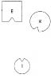
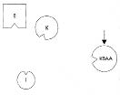
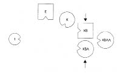
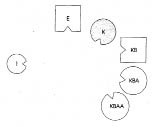
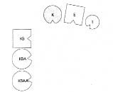
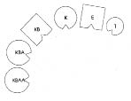
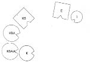
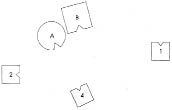
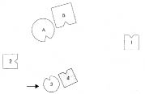
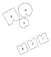

HELLINGER Christa, seninle devam edelim. Gelir misin?
Christa’nın kocası Max’a Yanına otur ve sen de katıl.
Christa’ya Hastalığın nedir?
CHRISTA Enerjim akıp gidiyor, olasılıkla çocuk felcim yüzünden. On dört yıldır çektiğim ses telleri felcinden ötürü yüksek sesle konuşamıyorum. Bunun da çocuk felcine bağlı olduğu daha yeni çıktı ortaya. Bütün gırtlak bölgesi ve diyafram felçli. Bu o zamanlar fark edilmemişti.
HELLINGER Ne kadar süredir bu hastalıktan yakınıyorsun?
CHRİSTA On dört yaşımdan beri.
HELLINGER Ailede bir şey oldu mu?
CHRISTA Benim konfirmasyonum[13].
HELLINGER Bunun bu kadar ciddi sonuçları olmamalı. Şimdiki sorunun nedir?
CHRISTA Kızımın konfirmasyonu yapıldı, bu da enerjimi alıp götürdü. Bundan altı ay kadar öncesinden dik duramaz olmuştum, şimdiyse enerjim ayakta durmaya bile el vermiyor. Böbrek iltihabı ile başladı. Hiç gücüm yok şimdi.
HELLINGER Güncel sistemini diz önce. Daha sonra köken ailendeki önemli kişilere de bakarız. Şimdiki ailen kimlerden oluşuyor?
CHRISTA Kocam, ben ve kızımdan.
Christa bu kişiler için temsilcileri seçer.
HELLINGER Kızının doğumunda ne oldu?
CHRISTA Hamilelik sırasında çok hastalandım, ölümün eşiğine geldim. Doktorlar bana yüzde on beş şans verdiler, çocuğunsa hiç yaşama şansı olmadığını söylediler. Önemli bir şey söylemem gerek: Büyük büyükannem doğum sırasında ölmüştü.
HELLINGER Bu, anlamlı. –Kısa bir süre önce bir kursumda hamilelik psikozu geçiren bir kadın vardı. Annesi doğum sırasında ölmüştü. Kadın ve kızını ölen annenin karşısına yerleştirdim ve kadına kızını ölen annesine tanıtarak ondan çocuğu kutsamasını istemesini söyledim. Bir anda kuşaklar ötesinden bir sevgi bağı ortaya çıktı. –Burada da daha sonra bu şekilde çalışacağım.
Şimdi önce güncel aileni diz.
1. Resim

E Erkek
K Kadın (=Christa)
1 İlk çocuk, kız
HELLINGER Adam nasıl?
ERKEK Karşı tarafta kızla aramda bir bağ hissediyorum ama karımdan yana dönmek istiyorum.
HELLINGER Kadın nasıl?
KADIN Çok üşüyorum. Ta başında, Christa beni seçtiğinde başladı, hâlâ da sürüyor. Kocamın yanında olursam geçeceğini düşündüm ama geçmedi.
HELLINGER Christa’ya Senin böyle üşüdüğün olur mu?
Christa başıyla onaylar.
HELLINGER gruba Temsilcisinin bu konuda hiçbir şey bilmeksizin bunu nasıl dolaysızca algıladığını görüyor musunuz? Kız nasıl?
İLK ÇOCUK Bu ana babayla kendimi çaresiz hissediyorum. Kiminle ilişkili olduğumu tam olarak bilemiyorum.
HELLINGER Christa’ya O büyük büyükanneye ne olmuş?
CHRISTA Yedinci çocuğunu dünyaya getirirken ölmüş. Babamın anneannesi.
HELLINGER Onu dizime ekliyorum şimdi. Görüş alanına getiriyorum; bakalım ne değişecek.
2. Resim

KBA Kadının babasının anneannesi, doğum sırasında ölmüş
HELLINGER Ne değişti?
KADIN Destek alıyorum. Artık birisi daha var. Daha önce kendimi çok yalnız hissediyordum.
HELLINGER Kız şimdi nasıl?
İLK ÇOCUK Bana da iyi geldi. Ona bakıyorum. Ana baba sürekli bakışlarını kaçırıyor.
HELLINGER Christa’ya Şimdi babanı ve annesini de dizime ekliyorum.
3. Resim

KB Kadının babası
KBB Kadının babaannesi
HELLINGER Kadının babasına Böyle nasılsın?
KADININ BABASI Arkamda bir şey var.
HELLINGER Bu hoş bir şey mi, değil mi?
KADININ BABASI Hoş değil.
HELLINGER Babanın annesi nasıl?
KADININ BABAANNESİ Kadın (ölen) bana fazlasıyla yakın.
HELLINGER gruba Doğum sırasında ölen bir kadın sistemde büyük bir korku yaratır.
Hellinger ölen büyük büyükanneyi kadının babaannesinin soluna yerleştirir.
4. Resim

HELLINGER Kadının babasına Onun görüş açına girmesi nasıl oldu?
KADININ BABASI Böyle daha iyi.
KADININ BABAANNESİ Benim için de.
KADININ BABASININ ÖLMÜŞ ANNEANNESİ Benim için burası iyi. Arkada dururken de sıcak bir duygu vardı içimde.
HELLINGER gruba Doğum sırasında ölen kadınlar kendilerinden sonra gelen çocukları ve torunlarına karşı iyi niyetlidirler. Onların iyiliğini isterler.
Christa’nın temsilcisine Şimdi nasılsın?
KADIN Daha iyi. Sol tarafım bütünüyle ısındı. Soldan büyük bir güç ve enerji geliyor.
HELLINGER Şimdi sistemi başka türlü dizeceğim. Bir aile dizimi yapılırken normal olarak önce erkek, ardından kadın, sonra da çocuklar gelir ve saat yönünde dizilirler. Ancak buradaki gibi kadında çok önemli, ciddi bir şey görüldüğünde önce o, ardından erkek gelir.
5. Resim

HELLINGER Şimdi nasıl?
KADIN Enerji var.
HELLINGER Enerji mi?
KADIN İki taraftan da canlı bir şekilde, bir anda gelmeye başladı. Daha önce sanki ortadan ikiye ayrılmış gibiydim. Ardından sol yanım ısındı, şimdiyse sağ tarafım da sıcak. Burada kalabilirim.
HELLINGER gruba Duydunuz mu?
Christa’ya Senin anahtar sözcüğün enerjiydi. Dizimde kendi yerine geç şimdi.
CHRISTA Tuhaf. Kızımın doğumundan sonra sol kolum felç olmuştu.
HELLINGER Dizime gir ve senin için uygun yerin neresi olduğunu sınayarak bul. Birisinin sana daha yakın ya da uzak olması gerektiğini hissedersen insanlara yer de değiştirtebilirsin.
Christa dizimdeki yerini alır, eşine biraz daha yaklaşarak babasına, büyük ve büyük büyükannelere el sallayarak kendisine yaklaşmalarını ister.
6. Resim

HELLINGER Adam şimdi nasıl?
ERKEK Kendimi böyle iyi hissediyorum.
HELLINGER Güzel. Kız nasıl?
İLK ÇOCUK Evet, böyle iyi.
HELLINGER gruba Annenin sistemi fazla yüklü olduğu için kızı annenin etki alanından çıkararak babanın etki alanına yerleştirdim.
Christa’nın kocası Max’a Sen de resimdeki yerini alıp mutluluğunun tadına varmak ister misin?
Max dizimdeki yerini alır ve hoşnut bir şekilde başını sallar.
HELLINGER Christa’ya Büyük büyükanneye “Kalırsam lütfen kutsa beni!” de. Yüzüne bak onun!
CHRISTA Kalırsam lütfen kutsa beni!
HELLINGER Biraz daha dostça bir tonla söyleyebilirsin. Güç dolu söyle: “Kalırsam…”
CHRISTA Kararlı bir sesle Kalırsam lütfen kutsa beni.
HELLINGER Tamam, öyle işte.
CHRISTA Kalırsam lütfen kutsa beni.
HELLINGER “Ben kalıyorum…” de ona.
CHRISTA Ben kalıyorum…
HELLINGER “…kocamın yanında.”
CHRISTA …kocamın yanında.
HELLINGER “Ve çocuğumla.”
CHRISTA Ve çocuğumla.
HELLINGER “Kaldığımda kutsa beni.”
CHRISTA Kaldığımda kutsa beni.
HELLINGER Şimdi bunu büyükanneye söyle!
CHRISTA Kaldığımda kutsa beni.
HELLINGER Babaya da!
CHRISTA Kaldığımda kutsa beni.
HELLINGER Tamam, böyle.
Hellinger Christa’yı sırtı büyük büyükanneye yaslanabilecek şekilde yerleştirir. Büyük büyükanne ellerini usulca onun omuzlarına koyar.
7. Resim

HELLINGER Büyük büyükannenden güç al!
Bir sessizliğin ardından Şimdi kocanın yanına dön, büyük büyükanneye bir kez daha bak ve “Kaldığımda kutsa beni” de.
CHRISTA Kaldığımda kutsa beni.
HELLINGER İşte şimdi güç vardı sözünde. Tamam, bu kadar.
Dizim: Karşıt cinsli özdeşleşme
HELLINGER Daniel’e Seninle çalışacağım. Verdiğimiz ara sırasında konuşmuştuk seninle. Yanıma otur. –Ailen hakkında biraz bilgi almak istiyorum yalnızca. Ana baban evli mi?
DANIEL Evet.
HELLINGER Kaç çocuksunuz?
DANIEL Üç erkek.
HELLINGER Ebeveyninden biri önceden bir evlilik ya da ciddi bir ilişki yaşamış mı?
DANIEL Hayır.
HELLINGER Ana babanın köken ailelerinde önemli bir şey yaşanmış mı?
DANIEL Babaannem kanserden ölmüştü.
HELLINGER Öldüğünde kaç yaşındaydı?
DANIEL Altmış ya da altmış beş.
HELLINGER Bu o kadar anlamlı değil. Doğum sırasında ölen olmuş mu?
DANIEL Sanıyorum bir ölü doğum olmuş ama bu konuda bildiğim bir şey yok.
HELLINGER Kimin çocuğu?
DANIEL Annemin galiba ama emin değilim.
HELLINGER Yani senin kardeşin olacaktı?
DANIEL Evet.
HELLINGER Oğlan mı, kız mı?
DANIEL Bilmiyorum.
HELLINGER Duygun ne yönde?
DANIEL Kız olduğu.
HELLINGER Doğru. Kaçıncı çocuksun sen?
DANIEL En küçük, üçüncü.
HELLINGER Ya ölü doğan? Senden sonra mıydı, önce mi?
DANIEL Benden önce.
HELLINGER Senden hemen önce mi?
DANIEL Evet, sanıyorum.
HELLINGER Pekâlâ, şimdi sistemi dizelim. Haydi. Ölü doğan çocuğu şimdilik bırakalım. Daha sonra alırız.
1. Resim

B Baba
A Anne
1 İlk çocuk, oğlan
2 İkinci çocuk, oğlan
4 Dördüncü çocuk, oğlan (=Daniel)
HELLINGER Baba nasıl?
BABA Kendime, ne oldu da en büyük oğul o kadar uzağa gitti diye sordum. Ayrıca karım da ikinci çocuğumla temasımı kesiyor. Onunla temas içinde olmak isterdim.
HELLINGER Anne nasıl?
ANNE Biraz şaşkın. Kocayı göremiyorum, en büyük çocukla ikinci çocuğu da. Tek görebildiğim, en küçük oğul.
HELLINGER En büyük oğul nasıl?
İLK ÇOCUK Arka tarafımda güçlü, kötü bir duygu var. Ana babamı göz ucuyla görebiliyor, başka da bir şey göremiyorum.
HELLINGER İkinci oğul nasıl?
İKİNCİ ÇOCUK Ağabeyimin arkasından gitmek istiyorum.
HELLINGER Daniel’in temsilcisine En küçük oğul nasıl?
DÖRDÜNCÜ ÇOCUK Buraya yerleştirildiğimde anneye fazlasıyla yakın hissettim kendimi. İki kardeşimin yanında olmayı yeğlerim.
HELLINGER Daniel’e Ölü doğan kız kardeşi dizime ekle. Bütünüyle duygunu izleyerek yap bunu.
2. Resim

3 Üçüncü çocuk, kız, ölü doğmuş
HELLINGER En küçük oğulda ne değişti?
DÖRDÜNCÜ ÇOCUK Büyük bir korku yaratıyor bende. Fazlasıyla yakın. Güvenli değil.
HELLINGER Kız kardeş nasıl?
ÜÇÜNCÜ ÇOCUK Kendimi burada çok yabancı hissediyorum.
HELLINGER Ana baba için bu değişiklik nasıl oldu?
ANNE Çocuğun burada olması hoşuma gidiyor.
BABA Bir şey daha eklendi ama asıl durum değişmedi.
HELLINGER Daniel’e Durumundan kısaca söz edebilir miyim?
Daniel başıyla onaylar.
HELLINGER gruba Verdiğimiz ara sırasında Daniel bana kendisini tam ortadan ikiye bölünmüş hissettiğini, cinsel kimliğinden, erkek mi, kadın mı olduğundan emin olamadığını söyledi. Bir oğlanın yer verilmeyen bir kızla özdeşleşmek zorunda kaldığı bir ailede olur bu. Burada gördüğümüz durum da tam olarak böyle. –Kız ebeveynine gitmeli.
Ölü doğan kızın temsilcisine Ana babanın önünde otur ve sırtını onlara yasla.
Hellinger anneyi babanın soluna yerleştirir ve ana babadan bir ellerini usulca çocuğun başına koymalarını ister. Ardından erkek kardeşleri yaş sırasına göre ebeveynin karşısına yerleştirir.
3. Resim

HELLINGER Böyle nasıl?
BABA Gurur dolu babayım ben.
ANNE Kendimi iyi hissediyorum.
HELLINGER En küçük oğul şimdi nasıl?
DÖRDÜNCÜ ÇOCUK Kendimi yeniden rahatlamış hissediyorum. Böylesi bana uygun.
Ana baba birbirine gülümser.
HELLINGER gruba Diğer çocuğa yer verildiği için en küçük oğul özdeşleşmeden sıyrılıyor. Artık kendisi olabilir. Başka birisini, bir kızı temsil etmek zorunda değil.
Kız kardeşe Çocuk orada, aşağıda nasıl?
ÜÇÜNCÜ ÇOCUK Benim yerim burası.
HELLINGER Doğru.
Daniel’e Kendi yerine geçmek ister misin?
Daniel dizimdeki yerini alır, çevresine bakar.
HELLINGER Diğer erkek kardeşler nasıl?
İLK ÇOCUK Harika.
Erkek kardeşler başlarıyla onaylar.
HELLINGER Tamam, bu kadar.